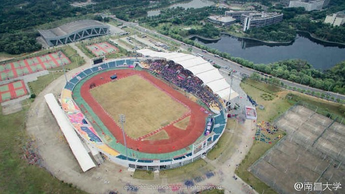
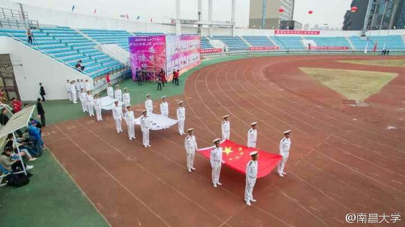
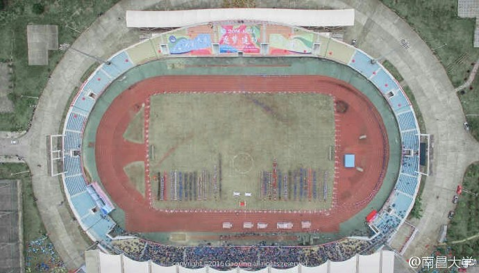

|  |
主办单位：南昌大学体育运动委员会 |
|
参赛单位： |  |
|  |
比赛分组及设项： |
10月27日上午 | |||
|
10月27日下午 | |||
10月28日上午 | |||
10月28日下午 | |||
10月29日上午 | |||
10月29日下午 |
Copyright © 2016 190506.com All Rights Reserved | 京ICP备 1234567 号